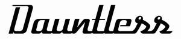

Trade Mark Journal No.2025/017 25 April 2025
UK00004180900 28 March 2025 (12,18,25,35,37,40,42)

- Class 12
- Land vehicles namely cars, motorcycles and bicycles; chassis for land vehicles; bonnets, bonnet straps; vehicle dashboards; vehicle seats; vehicle mirrors; covers for vehicle seats; upholstery for vehicles; head rests and back rests; gear lever knobs; land vehicle instruments, clocks; safety belts; seat covers; anti dazzle and anti-glare devices for vehicles; mud guards and flaps; brake pads, linings, segments and shoes; steering wheels, shaped covers for steering wheels, steering guards; storage compartments; grab handles; shock absorbers; wheels; wheel hubs, caps, rims, spokes and tyres; body parts for vehicles; car body modification parts for sale in kit form; bumpers, wheel trims, wheel arches, trim panels, spoilers; vehicle pedals; spare wheels, spare wheel covers; shaped or fitted mats and floor coverings for motor land vehicles; windscreens and windscreen wipers; vehicle hoods; ventilation grilles; horns for vehicles; roll bars; vehicle window blinds, sunshades; roof racks, luggage carriers and nets; cycle carriers; motorcycle panniers; specially adapted parts and fittings for motor vehicles; structural and decorative parts for automobiles, parts and fittings for all the aforesaid goods.
- Class 18
- Leather and imitations of leather, and goods made of these materials and not included in other classes; luggage; bags; trunks and travelling bags; sports bags; hunting, fishing and shooting bags and packs; luggage; handbags; backpacks; bags; travel bags; cases; briefcases; bags and cases for photographic goods; make-up bags; shoe bags; toiletry bags; tote bags; cases for documents, cases for business cards, cases for holding keys, cases for keys, credit card cases; garment bags; suit bags; suit carriers; suitcases; leather for furniture; cases for tripods; wallets; wallet holders; rucksacks; umbrellas, parasols and walking sticks; parts and fittings for the aforesaid goods.
- Class 25
- Clothing, footwear and headgear.
- Class 35
- Retail and online retail services connected with the sale of automobiles, motorcycles and bicycles, automobile parts, motorcycle parts and bicycle parts; consultancy and advisory services relating to the purchase of customised vehicles, motor cycles and bicycles; business advisory services relating to luxury automobile branding and personalisation; retail and online retail services connected with the sale of leather and imitations of leather, luggage, bags, trunks and travelling bags, sports bags, hunting, fishing and shooting bags and packs, luggage, handbags, backpacks, bags, travel bags, cases, briefcases, bags and cases for photographic goods, make-up bags, shoe bags, toiletry bags, tote bags, cases for documents, cases for business cards, cases for holding keys, cases for keys, credit card cases, garment bags, suit bags, suit carriers, suitcases, leather for furniture, cases for tripods, wallets, wallet holders, rucksacks, umbrellas, parasols and walking sticks, clothing, footwear and headgear.
- Class 37
- Maintenance, servicing and repair of bespoke motor vehicles, motorcycles and bicycles; custom installation of exterior, interior and mechanical parts of vehicles; modification and installation of vehicle parts and accessories.
- Class 40
- Custom-built and bespoke automobiles; custom motor vehicles; Customisation of motor vehicles, motorcycles and bicycles; customisation of automobiles; custom manufacture, assembly, alteration, modification and finishing of motor vehicles and automobiles and their interior and exterior parts; information, advisory and consultancy services relating to motor vehicle and automobile component custom construction, custom manufacture, assembly, alteration, modification and finishing of interior and exterior components.
- Class 42
- Design and development of bespoke motor vehicles, motorcycles and bicycles; design consultancy relating to vehicle interiors and exteriors; design consultancy relating to motorcycle exteriors design services relating to luxury lifestyle products; prototyping of automobile components and custom vehicle parts; design services for the automotive industry; industrial design for the automotive industry; consultancy, consultation, planning, project management for the automotive industry; technical design services relating to the automotive industry; prototypes and roll-out design services for the automotive industry; advisory services relating to design services for the automotive industry; software as a service (SAAS) in relation to the customisation of automobiles; provision of online non-downloadable software; provision of information, advisory and consultancy services relating to the aforesaid services.
Dauntless Limited
Representative: Appleyard Lees IP LLP